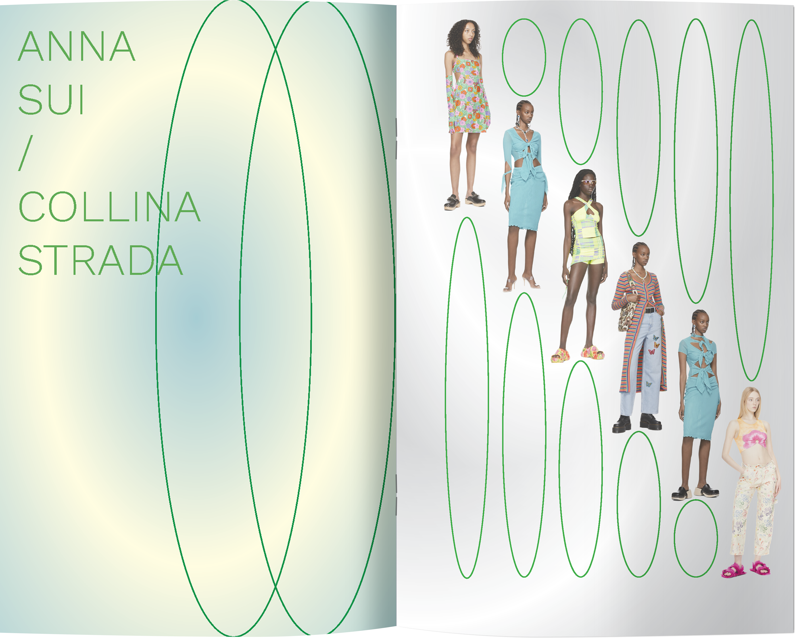
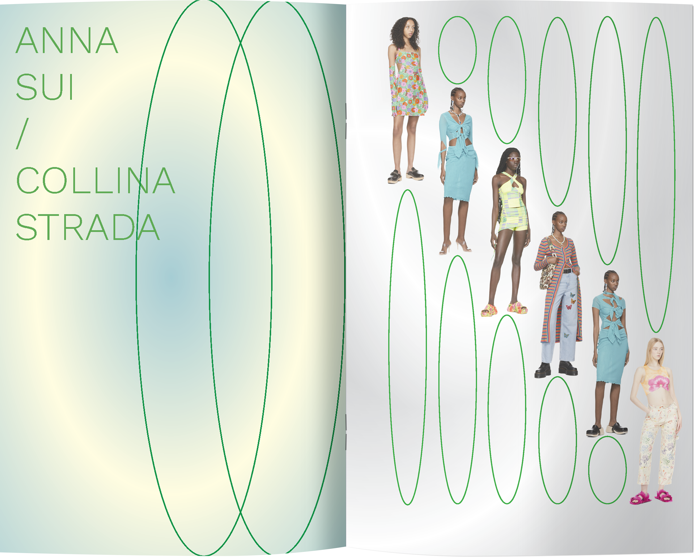
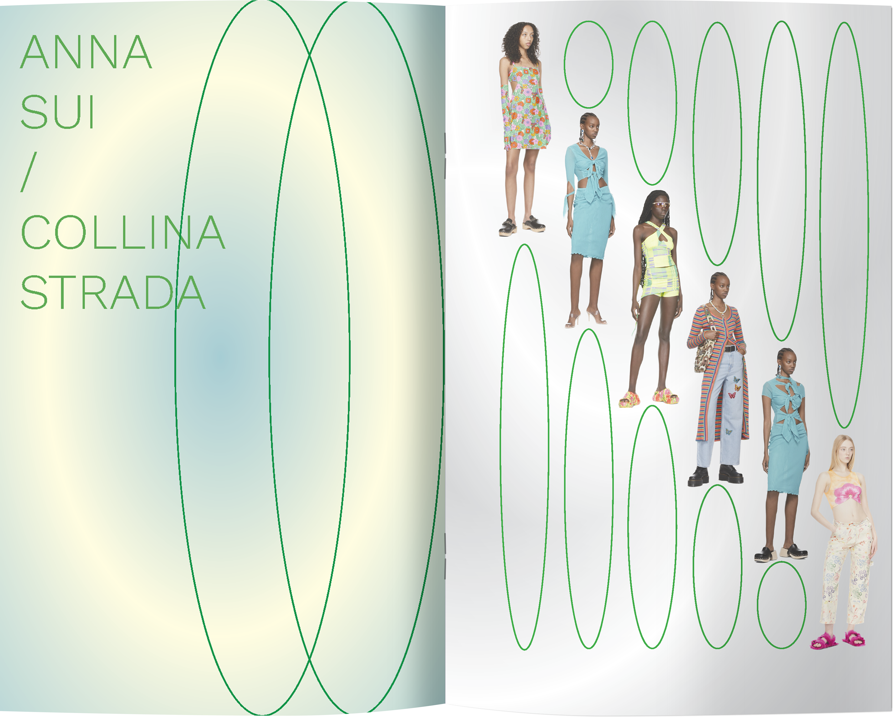

UNDRE(SS23)
During the Spring/Summer fashion season in 2023 I noticed that the most popular designs were those made by white male designers. This zine "undresses" the fashion industry and celebrates fashion made by female-identifying and non-binary designers of colour. Images from SSENSE.

 
